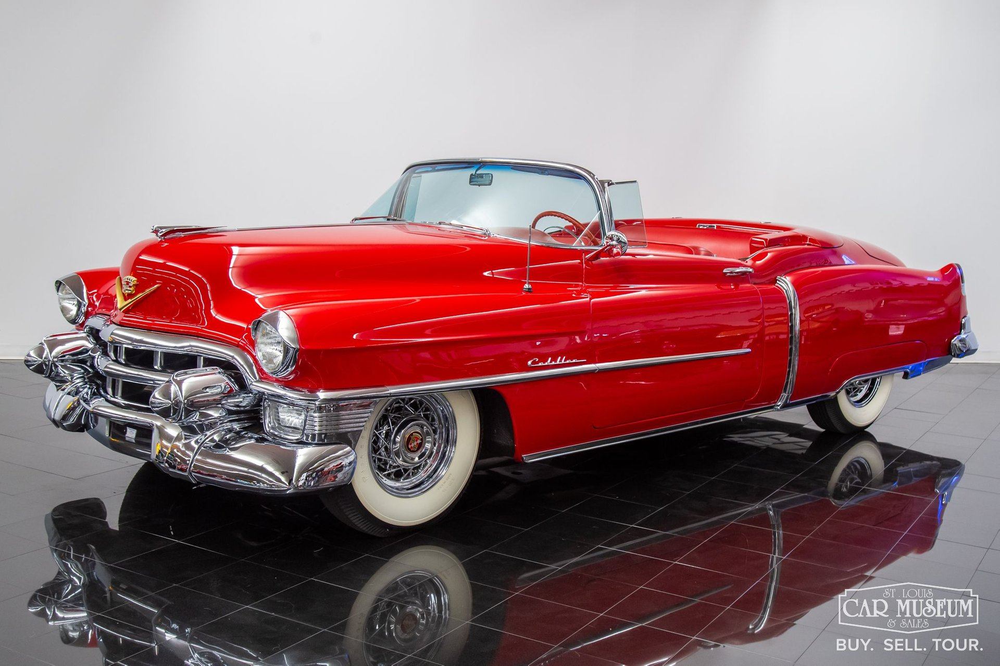
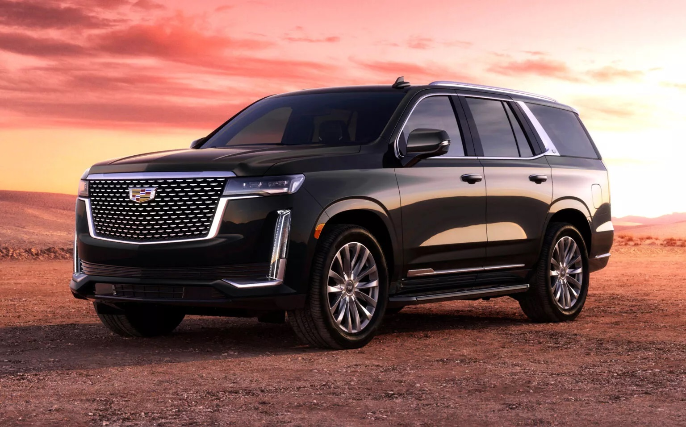
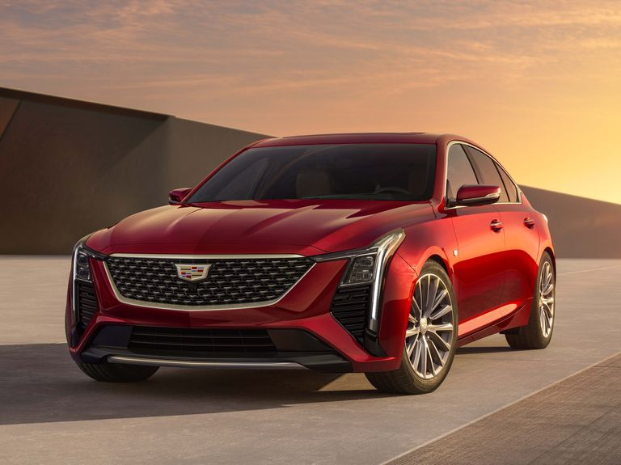

Cadillac
{kind=link}
A Cadillac
A Cadillac Motor Car Division vagy egyszerűen a Cadillac a General Motors (GM) amerikai autógyártó részlege , amely luxusjárműveket tervez és gyárt . Főbb piacai az Egyesült Államok, Kanada és Kína. A Cadillac modelleket 34 további piacon forgalmazzák világszerte. Történelmileg a Cadillac autók a luxusmezőny élén álltak az Egyesült Államokban, de a 2000-es évek óta túladták őket az európai luxusmárkák, köztük a BMW és a Mercedes . [3] 2019-ben a Cadillac 390 458 járművet adott el világszerte, ami a márka rekordja
A Cadillac számos releváns információt árult el az új mechanikai kínálatáról Cadillac CT6, a márka zászlóshajója, amelyet március 31-én mutatnak be a New York-i Autószalonon. Johan de Nysschen egyes kijelentései a Cadillac CT6 mechanikai hatótávolságára számítottak, most azonban meglehetősen részletes hivatalos információink vannak. Megerősíthetjük, hogy a Cadillac CT6 mechanikai hatótávolsága legalábbis kezdetben háromból áll majd. benzinmotorok. Az alsó részen lesz a 2.0 Turbo négyhengeres, egy megújult atmoszférikus 3.6 V6 és egy 3.0 TwinTurbo V6. Valamennyi változat fel lesz szerelve a nyolcfokozatú automata váltó mint az, amelyik már a Chevrolet Corvette-et szereli fel. Még mindig nem erősítették meg a legerősebb motort, amelyről úgy tartják, hogy egy kompresszoros V8-as.
Legérdekesebb modelleink:
Cadillac-eldorado
Az Eldorado a Cadillac vonal tetején vagy annak közelében volt. Az eredeti, 1953-as Eldorado kabrió és az 1957–1960-as Eldorado Brougham modellek külön karosszériával rendelkeztek,és ezek voltak a Cadillac által azokban az években kínált legdrágább modellek. 1966-ig az Eldorado árban soha nem volt kevesebb, mint a második a Cadillac Series 75 limuzin után.1967-től az Eldorado megtartotta prémium pozícióját a Cadillac árstruktúrájában, de nagy mennyiségben gyártották egyedi, két darabon. ajtós személyes luxusautó platform.
Hossza
Hossz: 5 613 mm Az 1966-os Toronado bevezetése végül akkora sikert aratott, hogy a Motor Trend szerkesztői az alábbi kommentárral adták át az Év Autója díjat a Toronado elismeréseként: „Büszkén és örömmel adjuk át a díjat a General Motors Oldsmobile Részlegének, mivel a díj 14 éves történetében soha nem volt még ennyire egyértelmű és egybehangzó a választásCadillac Escalade

Technológia
Hihetetlen jóslatok váltak valóra. Az Escalade magasra emeli a saját csúcstechnológiai mércéjét, és olyan újításokkal viszi előre az utazást, amelyek nemcsak fokozzák a vezetési élményt – hanem forradalmasítják is.Teljesítmény
Válassza ki az Önnek megfelelőt a széria 6,2 literes V8-as motor, az opcionálisan rendelhető Duramax® 3,0 literes turbódízel 6 hengeres motor vagy a kézzel épített 6,2 literes kompresszoros V8-as motor közül, amely kizárólag az Escalade-V-ben található meg.Audiorendszer
Az opcionálisan rendelhető 36 hangszóró – a kategóriájában a legtöbb – az utastérben különböző magasságokban és helyeken elhelyezve magával ragadó hallgatási élményt nyújt.Cadillac CT5-V
Állítólag nem készül több benzinmotoros sportmodell a Cadillacnél, ezért jobban teszik az ügyfelek, ha megbecsülik a CT5-V szériát, amely az új modellévben is kétféle motorizációval szórakoztatja gazdáját. A pontos részleteket elolvashatod ide kattintva, mert a majd’ 5 méter hosszú modellpáros bevezetése óta nem változott a hajtáslánc<